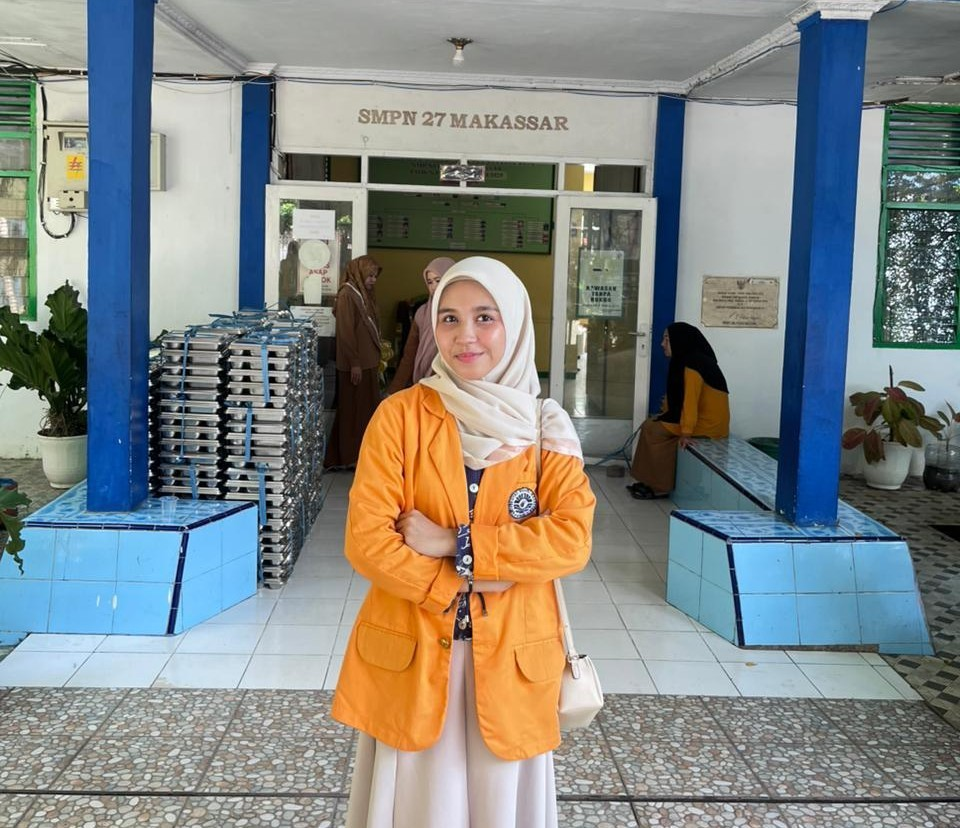
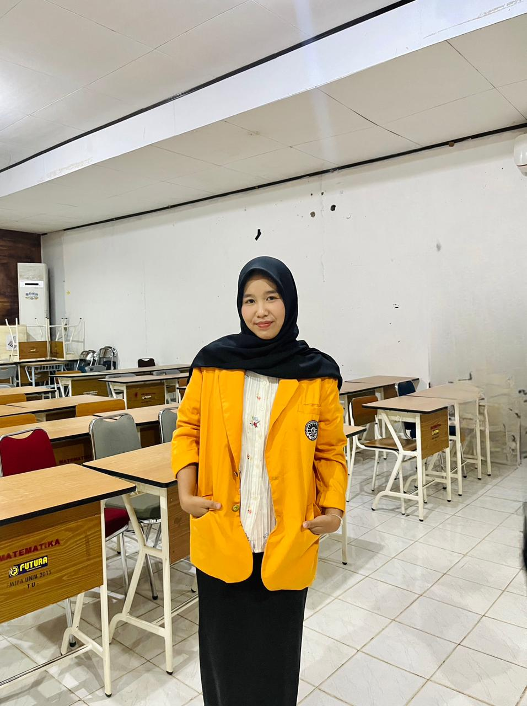
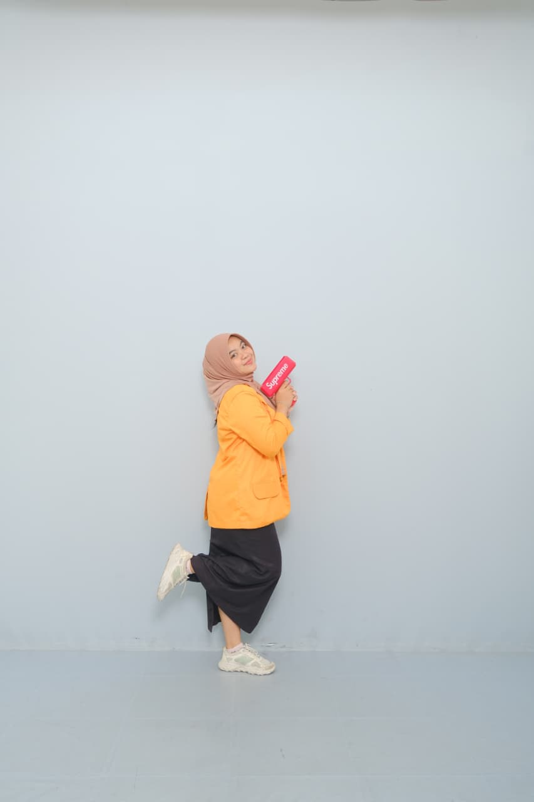
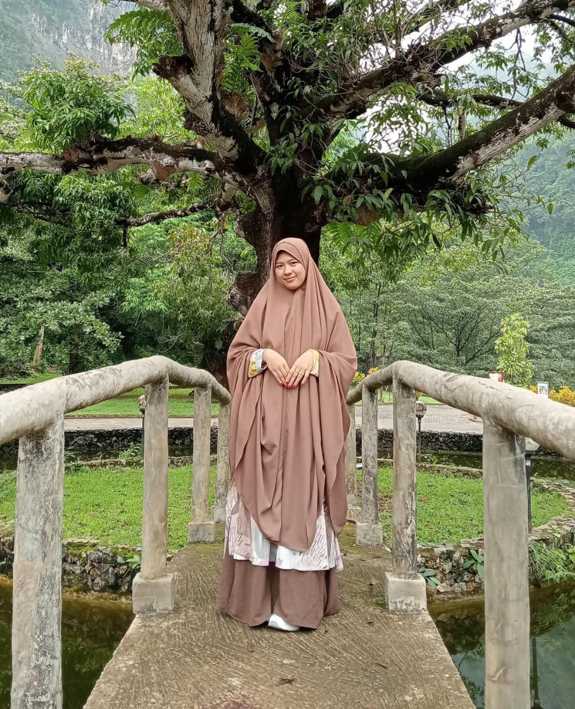
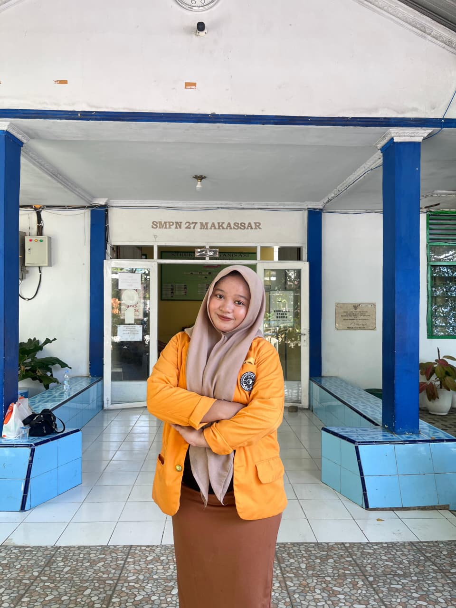

Putri Amelia Kartika.K
Universitas Negeri Makassar
Pendidikan Matematika"Bertanggung jawab atas pengelolaan perpustakaan digital."
Mengenal lebih dekat para mahasiswa yang bertugas di SMPN 27 Makassar.
Seluruh mahasiswa dalam tim ini berasal dari program studi Pendidikan Matematika yang berfokus pada penguatan numerasi siswa.

Universitas Negeri Makassar
Pendidikan Matematika"Bertanggung jawab atas pengelolaan perpustakaan digital."

Universitas Negeri Makassar
Pendidikan Matematika"Membantu penguatan literasi dan adaptasi teknologi."

Universitas Negeri Makassar
Pendidikan Matematika"Fokus pada inovasi media pembelajaran numerasi."

Universitas Negeri Makassar
Pendidikan Matematika"Mengkoordinasi program pojok baca dan numerasi."

Universitas Negeri Makassar
Pendidikan Matematika"Menyusun bank soal berbasis kemampuan berpikir kritis."
NIDN: 00XXXXXXXX
Instansi: Universitas Negeri Makassar
NIDN: 00XXXXXXXX
Instansi: Universitas Negeri Makassar